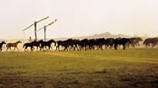

|
|
|
Ungarns
Naturschätze liegen in den unberührten Pusztagebieten,
Moor-, Sumpf- und Augeländen, Wäldern, Wiesen und
Steppen, wo die ursprüngliche Pflanzen- und Tierwelt bis
heute weitgehend erhalten blieb. Mit etwas Glück kann man sogar eine Fata
Morgana erleben - auf dem Kopf stehende
Gehöfte am
Horizont
oder - wie an der antiken Postkarte rechts - eine
Flusslandschaft direkt hinter der Rinderherde, die in der
Tat jedoch etwa 100 km entfernt ist. |
|
Puszta: Das Wort
"Puszta" bedeutet Wüste oder ödes Land und
kennzeichnet bestimmte ökologische Standorte. Pusztagebiete gibt es in ganz
Ungarn, aber die meisten und gößeren befinden sich in der Großen Ungarischen
Tiefebene östlich der Donau.
Im geographischen und ethnographischen Sinne ist die Puszta
ein großes Gebiet, auf dem Viehzucht betrieben wird. In
seiner historischen Bedeutung bezeichnet der Begriff jedoch Siedlungen,
die aus verschiedenen Gründen verlassen wurden. Puszta ist
vergleichbar mit der Heide in Deutschland.
Ökologischer
Vergleich Heide - Puszta:
- Heide: Die Böden der Heidegebiete wurden durch
Streunutzung und Plaggenwirtschaft devastiert. - d.h.
Übernutzung der im Boden vorhandenen Nährstoffe.
- Puszta: Ähnlich erging es in den ungarischen
Pusztagebieten im 13.-14. Jh. und diese Entwicklung setzte sich mit
unterschiedlicher Intensität bis ins 18. Jh. fort. Ursachen
waren die unerträglichen Steuerlasten, Epidemien und Kriege,
aber auch die Änderungen im Wirtschaftssystem.
Überall, wo die Herdenzucht sehr stark verbreitet war, kommt
die Puszta vor. Das Vieh zog, nach Rassen getrennt, fast das ganze Jahr
hinweg - bis Winteranfang - über die Weiden. Die Pusztagebiete wurden durch
Entwässerung/Kanalisation im 18.-20. Jahrhundert erheblich
erweitert. Heute ist die
Puszta eher eine touristische Attraktion, aus
landwirtschaftlicher Sicht jedoch ein nicht zu unterschätzender
Wirtschaftsfaktor.
|
Alle Pusztagebiete östlich
der Donau waren noch vor rd. 200 Jahren
jahreszeitlich regelmäßig überflutete
Überschwemmungsgebiete. Viele
von ihnen wurden im Rahmen von Flussregulierungen
trockengelegt für die Landwirtschaft. Flora und Fauna
veränderten sich.
Die ungarische Tiefebene war einst - aus geologischer Sicht
betrachtet noch vor kurzer Zeit - ein Meeresboden. Die
Pusztaböden sind vielerorts stark salzhaltig. Der
hohe Salzgehalt des Bodens erlaubt vielerorts nur noch ein
spärliches Wachstum von Halophyten. Das sind salzresistente
Pflanzen, die man üblicherweise nur an den Meeresküsten
findet. Von den gebliebenen
Feuchtgebieten sind heute
viele Naturschutzgebiete, darunter viele Vogelreservate.
Weniger feuchte Böden werden für Rinder- und Pferdezucht
genutzt, ja sogar für den Ackerbau. |
|
|
 |
Bild
links: ein Pferdegestüt
in der Puszta.
Ein Ausflug in das größte Pusztagebiet "Nationalpark Hortobágy" ist
ein Muss für alle Touristen, ein unvergessliches
Erlebnis und bringt Abwechslung für die Kurgäste.
Bild
rechts: externe Rinderhaltung
in den endlosen Weiten der Puszta bei Hortobágy.
|
 |
|
Mit Ungarn werden dessen
weite Ebenen, die Puszta und ihre Pferde assoziiert. Mit den Reitvorführungen werden
dem Fremden überlieferte Traditionen des einstigen Hirtenlebens, die
Viehzucht und die näher
gebracht. Ungarn bietet jedoch viel mehr. Wer etwas für seine
Gesundheit tun möchte, der sollte die
aufsuchen, die aus den riesigen unterirdischen Thermalwasserreservoirs
der Tiefebene hervorquellen. |
|
| |
| |
| |
|
Ungarn-Tourist Team

|
| |
| |
|